Mondi virtuali · Audiovisivi per il web
World building e worlding
Due termini per due modi di fare un mondo: progettarlo come un insieme coerente, o fissarne le condizioni e lasciarlo evolvere. Le opere vengono in gran parte dalla mostra WORLDBUILDING (Düsseldorf, 2022).
Lezione precedente: Prima dei mondi virtuali. Frecce ← → per passare da un blocco all'altro, clic su un'immagine per ingrandirla.
La mostra WORLDBUILDING
Julia Stoschek Collection, Düsseldorf, 2022, a cura di Hans Ulrich Obrist. 34 artisti, dagli anni Novanta a oggi.
- Nel 2021 hanno giocato ai videogiochi 2,8 miliardi di persone.
- Tesi di Obrist: i videogiochi stanno al XXI secolo come il cinema al XX e il romanzo al XIX.
- L'arte si avvicina al gioco per fasi: ne riprende l'estetica, se ne appropria, ne critica gli stereotipi, entra nei giochi di massa, infine produce giochi propri.
- Fare un gioco significa stabilire regole, ambienti, sistemi e dinamiche.
- Il vincolo come metodo: il riferimento è l'Oulipo, scrittori e matematici che si davano regole per scrivere.
- C. Thi Nguyen, Games: Agency as Art (2020): il gioco è una forma d'arte che lavora sull'agency, cioè sui modi di agire del giocatore.
«create new worlds, not just inherit and live within existing ones»
Frase attribuita a Ian Cheng, citata da Obrist nell'introduzione al catalogo
Le parole
World building
Il termine viene dalla letteratura fantastica e di fantascienza, poi dal cinema e dal videogioco.
J. R. R. Tolkien, On Fairy-Stories (1939, pubblicato nel 1947): la «sub-creazione» di un mondo secondario coerente, fatto con materiali del mondo primario.
Mark J. P. Wolf, Building Imaginary Worlds (2012): i mondi immaginari studiati come oggetti a sé, con mappe, lingue, genealogie e cronologie.
Worlding
Martin Heidegger, L'origine dell'opera d'arte (1935-36): l'opera apre un mondo; «mondo» è un evento, non un contenitore (die Welt weltet).
Gayatri C. Spivak, The Rani of Sirmur (1985): il colonialismo «fa mondo» iscrivendo la propria cartografia su un territorio trattato come vuoto.
Donna Haraway, Staying with the Trouble (2016): fare mondi insieme ad altre specie.
Ian Cheng, Emissaries Guide to Worlding (2018): l'arte di avviare un mondo e mantenerlo vivo.
Ian Cheng e il worlding
La distinzione tra i due termini è di Cheng, che la dichiara in più occasioni.
Non è un libro sul worldbuilding, né su come rendere più credibile il proprio romanzo fantasy: è un libro sul Worlding.
Ian Cheng, Emissary's Guide to Worlding, 2018 (parafrasi dall'inglese)
Worldbuilding
«is about fabricating the latent space enough to do work there»
Fabbricare lo spazio latente di un mondo quanto basta per poterci lavorare.
Worlding
«is about creating conditions for a world's latent space to express and expand itself thru more ppl»
Creare le condizioni perché il potenziale di un mondo si esprima e cresca attraverso altre persone.
Ian Cheng, post su X, 18 luglio 2022. Nello stesso post: entrambi i termini riguardano lo «spazio latente», il potenziale di un mondo.
Le definizioni di Fare mondi
- Worlding: «l'arte di concepire, incubare, innescare e curare un gioco infinito» (Glossario, p. 119).
- Il metodo: scegliere un presente, raccontarne il passato, simularne i futuri, curarne i cambiamenti (p. 15).
- Un Mondo è un futuro in cui si può credere, perché promette di diventare un gioco infinito: sopravvive al suo creatore e continua a generare svolte (p. 20).
- Vitalità: quanto un Mondo viene usato, diviso quanto controllo l'autore mantiene (p. 25).
- Quattro maschere per lavorare a un Mondo: Direttore, Fumettista, Hacker, Emissario (pp. 34-44).
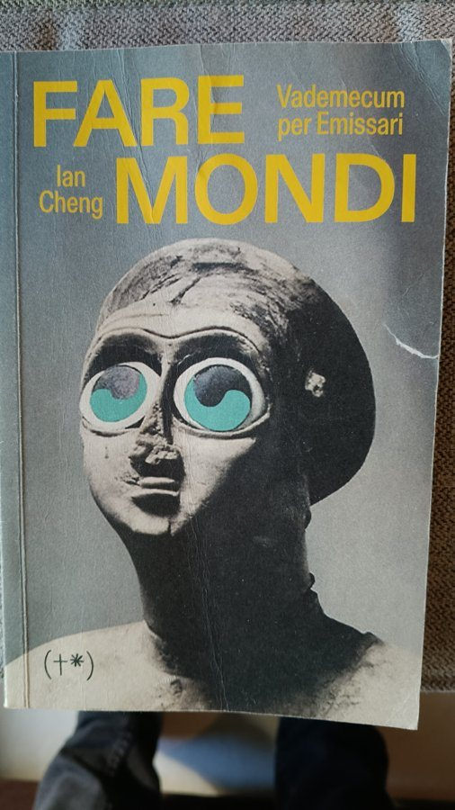
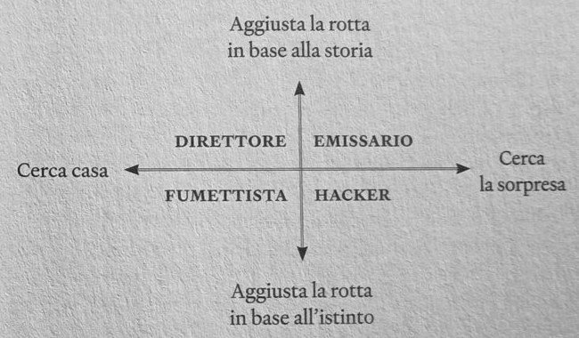
1Intervenire sull'esistente
Si modifica un gioco già esistente: se ne tolgono parti, se ne cambiano le regole, se ne registra l'uso.
JODI, Untitled Game 1998-2001
Serie di modifiche di Quake. In Arena tutto diventa bianco; in Ctrl-Space il motore prova a mostrare l'interno di un cubo.
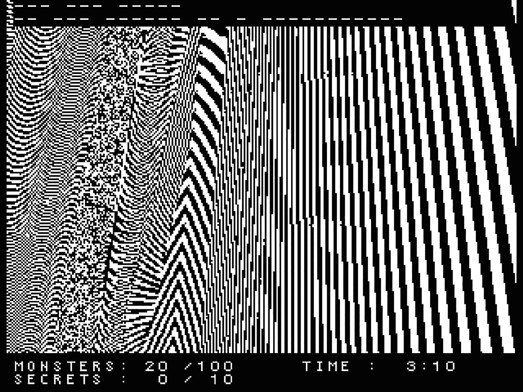
Cory Arcangel, Space Invader 2004 · Sturtevant, Pacman 2012
Arcangel, con Alex Galloway, toglie tutti gli alieni tranne uno, che eredita le munizioni: si perde sempre. Sturtevant presenta un clone non giocabile, che torna di continuo al «game over».
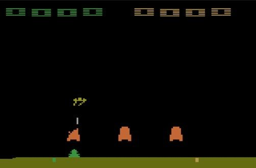
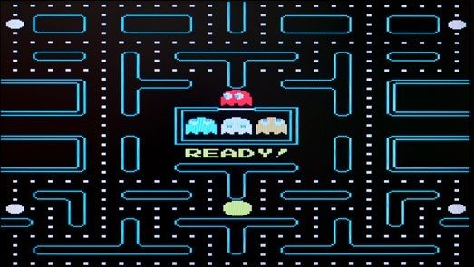
Peggy Ahwesh, She Puppet 2001
Quindici minuti di partite a Tomb Raider in cui Lara Croft muore di continuo.
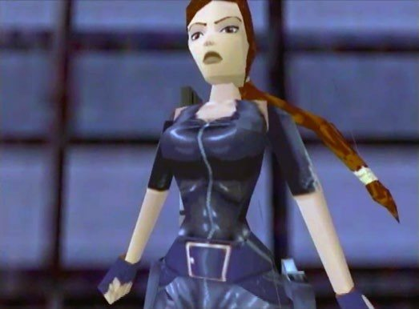
2Abitare il mondo
Si entra con un avatar in un mondo fatto da altri e lo si osserva dall'interno.
Cao Fei, i.Mirror 2007
Film girato in Second Life dall'avatar dell'artista, China Tracy, montato da molte ore di registrazioni. Racconta anche la relazione con un altro avatar.
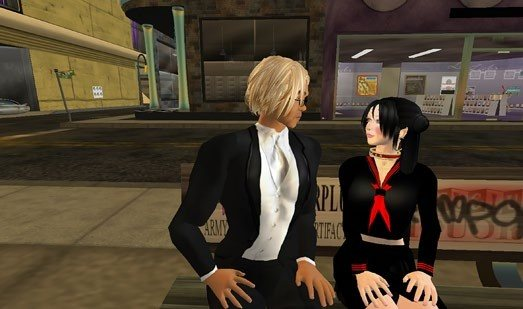
Angela Washko, The Council on Gender Sensitivity and Behavioral Awareness in World of Warcraft 2012-16
Dentro World of Warcraft l'artista apre discussioni sulla misoginia con gli altri giocatori.
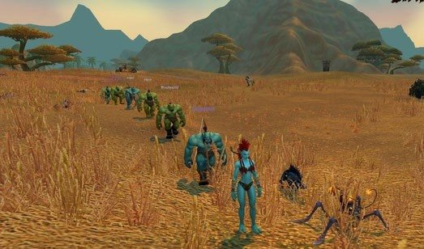
LaTurbo Avedon, Permanent Sunset dal 2020
L'avatar guarda il tramonto dentro giochi come Star Citizen e Counter-Strike.
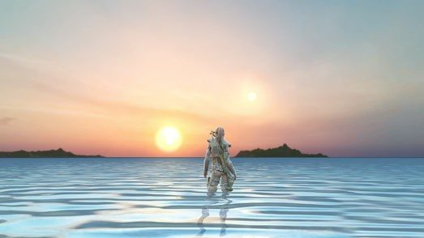
3Costruire il mondo
Si progettano un luogo, una storia, una cosmologia.
Lawrence Lek
Formazione da architetto (Cambridge, Architectural Association, Cooper Union). Usa il game engine per film, giochi e installazioni ambientati nello stesso universo.
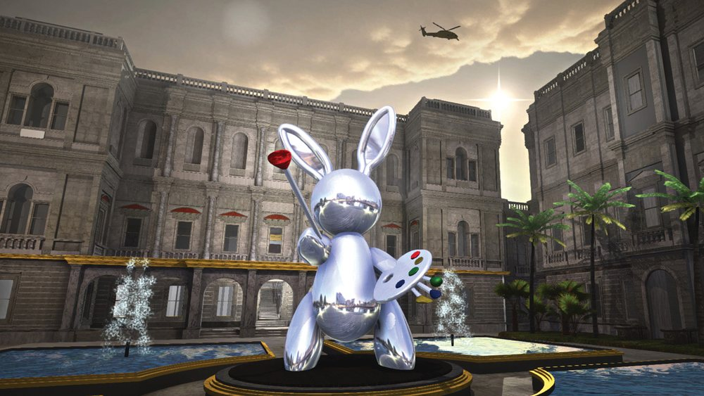
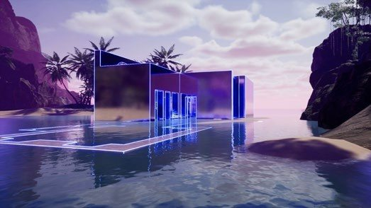
Basmah Felemban, The Jirry Tribe Stop 2021
Un mondo con logica, lingua e ordine propri, costruito su cosmografie islamiche del XIII e del XV secolo e sulla geometria moderna.
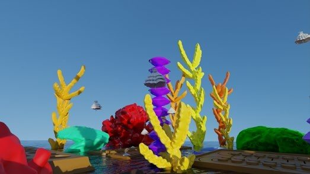
Suzanne Treister, No Other Symptoms: Time Travelling with Rosalind Brodsky 1995-99
CD-ROM. L'alter ego dell'artista viaggia nel tempo per salvare i nonni dall'Olocausto, tra sedute con Freud e Lacan.
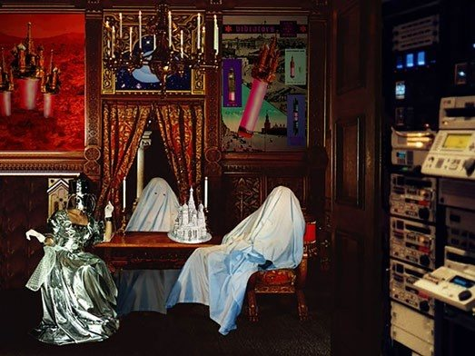
4Far evolvere il mondo
Si scrivono le regole e gli agenti, poi il mondo procede senza che l'autore ne decida gli sviluppi.
Rebecca Allen, The Bush Soul #3 1999
Il pubblico guida un avatar di particelle tra creature autonome, in un mondo senza obiettivi. Il sistema è Emergence, motore 3D con vita artificiale.
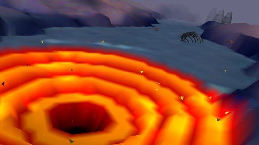
Ian Cheng
Studia scienze cognitive e arte a Berkeley, lavora a Industrial Light & Magic e nello studio di Pierre Huyghe. BBRRAATTSS (2012) lavora sui difetti della simulazione; in Entropy Wrangler (2013) un cumulo di oggetti interagisce secondo le proprie impostazioni.
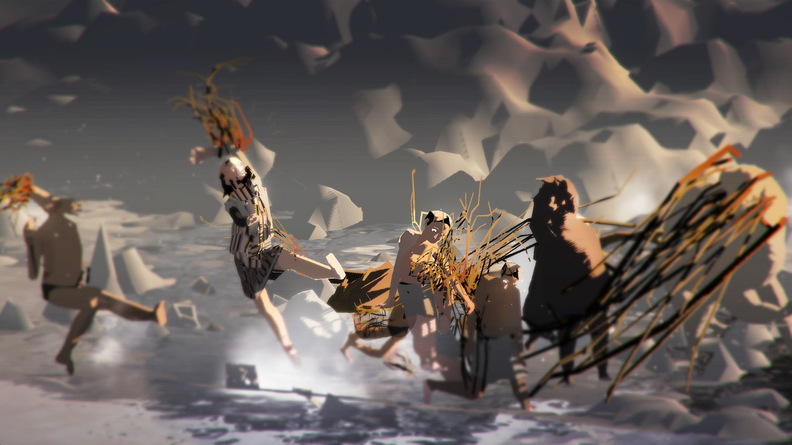
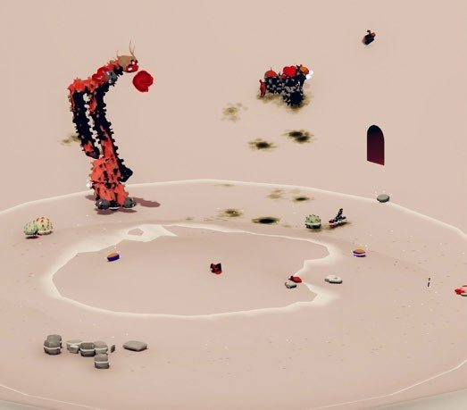
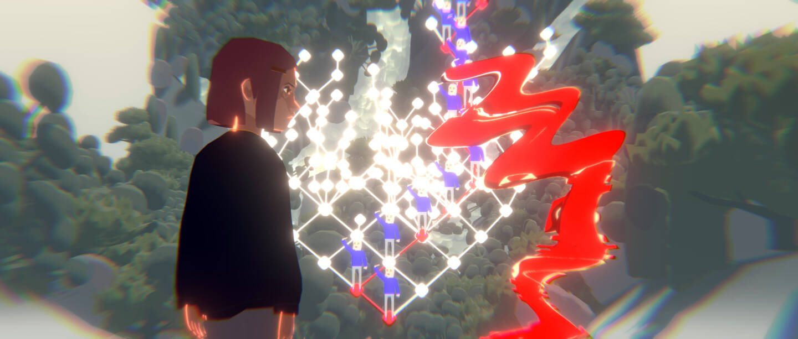
Jakob Kudsk Steensen, RE-ANIMATED
Un ecosistema virtuale costruito attorno al canto registrato dell'ultimo Kauaʻi ʻōʻō, uccello hawaiano estinto nel 1987.
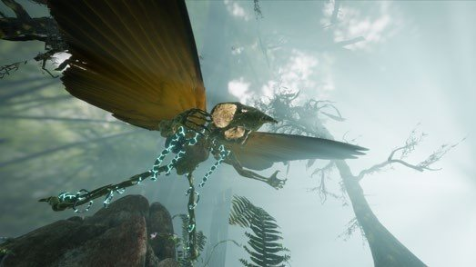
5Nuovi fondamenti
Mondi costruiti a partire da memorie ed esperienze personali e collettive: famiglia, migrazione, identità nere, trans e indigene, il corpo.
Jacolby Satterwhite, We Are in Hell When We Hurt Each Other 2020
Concerto virtuale costruito sulla voce a cappella della madre, Patricia Satterwhite.
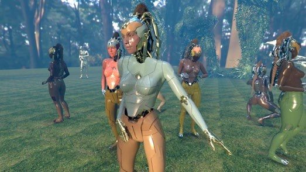
Gabriel Massan, THIRD WORLD: THE BOTTOM DIMENSION dal 2022
Un mondo nato dalle esperienze di immobilità e disuguaglianza dell'America Latina nera e indigena. Massan lo chiama «fictional archaeology».
Danielle Brathwaite-Shirley, SHE KEEPS ME DAMN ALIVE 2021
Gioco arcade dalla parte delle vite trans nere, con una pistola rosa stampata in 3D come controller. Si può scegliere di proteggere invece che eliminare.
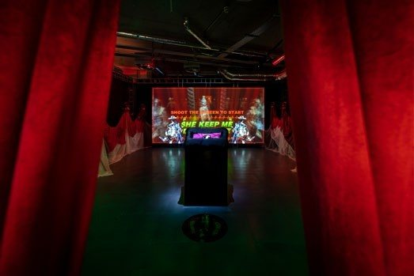
Meriem Bennani, Party on the CAPS 2018-19 · Sondra Perry, IT'S IN THE GAME '17 2017
Bennani: un'isola nell'Atlantico dove finiscono i migranti intercettati, in un mondo in cui il teletrasporto danneggia i corpi. Perry: l'immagine del fratello gemello, giocatore universitario, usata in un videogioco senza consenso né compenso.
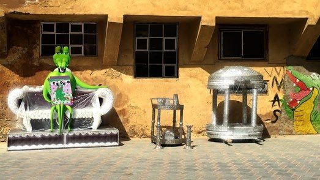
Lual Mayen, Salaam dal 2016 · Keiken, Bet(a) Bodies 2021-22
In Salaam si è in fuga da una guerra, e gli acquisti nel gioco finanziano organizzazioni umanitarie reali. Keiken fa indossare al visitatore un utero aptico.
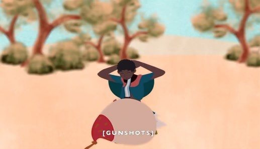
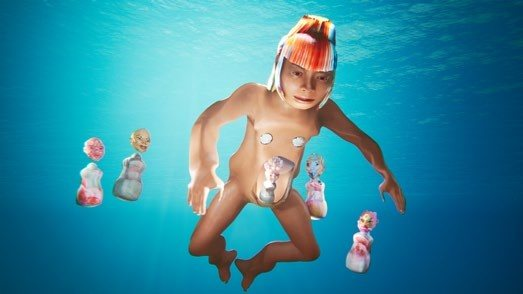
6Decostruire la simulazione
Un'analisi dei mondi simulati usati dall'esercito, per addestrare e per curare.
Harun Farocki, Serious Games I-IV 2009-10
Quattro marines guidano un blindato in un Afghanistan simulato, mentre un istruttore piazza ordigni e nemici. In Immersion simulazioni simili servono a trattare il disturbo post-traumatico dei veterani. I programmi di addestramento hanno le ombre, quelli terapeutici, più economici, no.
Fonti
- WORLDBUILDING: Gaming and Art in the Digital Age, booklet della mostra, Julia Stoschek Collection, Düsseldorf, 2022: testi sulle opere e immagini, dove non indicato altrimenti.
- Ian Cheng, Fare mondi. Vademecum per emissari, trad. di Assunta Martinese, Timeo, 2024; ed. orig. Emissaries Guide to Worlding, Serpentine Galleries e Koenig Books, 2018.
- Ian Cheng, post su X del 18 luglio 2022 (link).
- Schede del database: Ian Cheng, Lawrence Lek, Harun Farocki, Cao Fei, Jacolby Satterwhite.
- Le immagini sono usate a scopo didattico. Se sei titolare dei diritti e vuoi che un'immagine venga tolta, apri una issue nel repository.